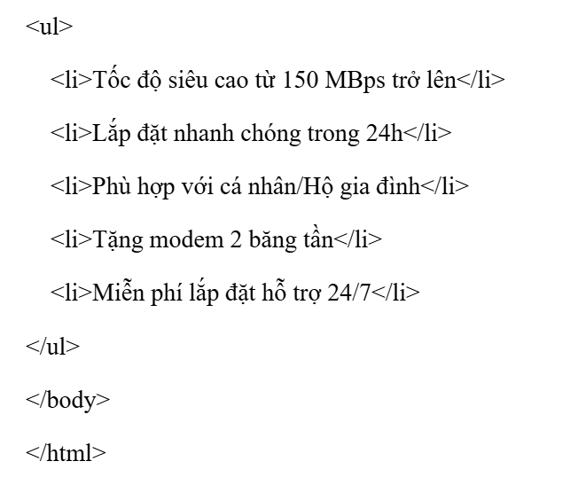
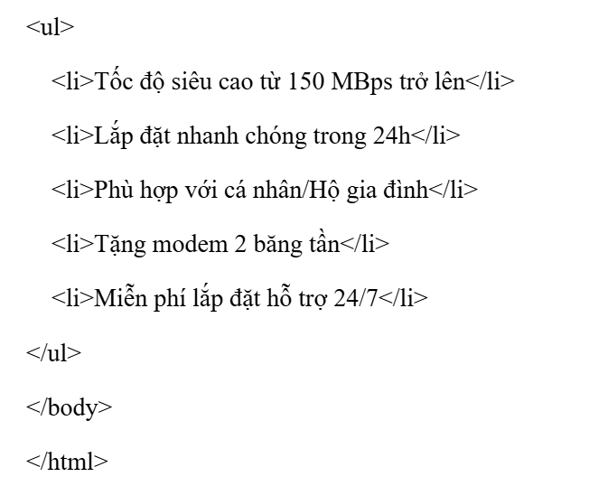

Luyện tập 2
Đề bài: Trình bày đoạn văn bản sau bằng mã HTML:
INTERNET TỐC ĐỘ CAO Dịch vụ Internet tốc độ cao là dịch vụ internet cáp quang chất lượng cao, ổn định, giá cả hợp lý. Các tính năng nổi bật: - Tốc độ siêu cao từ 150MBps trở lên - Lắp đặt nhanh chóng trong 24h - Phù hợp với cá nhân/Hộ gia đình - Tặng modem 2 băng tần - Miễn phí lắp đặt hỗ trợ 24/7
Lời giải (HTML):
 
